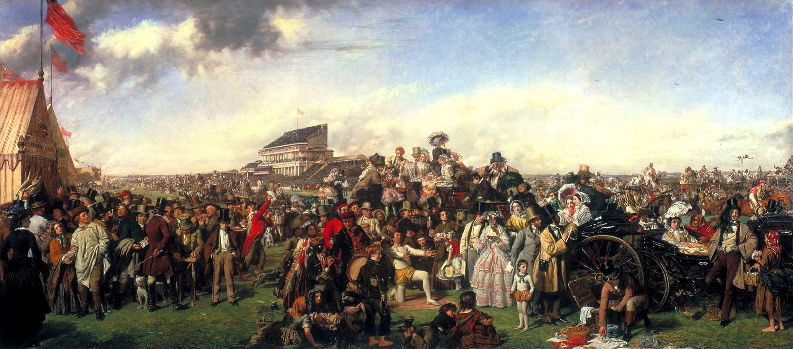

Méthodologie · anglais · My Working Day · lycée professionnel, CFA, lycée agricole
Pédagogie de la réussite
My Working Day : comment parler de son métier et de sa journée de travail en anglais.
On ne peut plus faire comme si trente élèves assis attendaient le cours. Ils ne le retiennent pas. Ils attendent la sonnerie. Le prof rentre avec le sentiment d’avoir failli.
Mise en situation
Observer, ajuster, faire réussir
Repérer ce qui fait avancer la classe et ajuster une séance selon la pédagogie de la réussite.
Pourquoi on ne peut plus faire comme avant
Nous sommes dans une tension extrême. Ce n’est pas une impression de salle des profs. C’est le quotidien.
Trente élèves. Des chaises. Un cours qu’on dispense. Eux qui attendent que ça passe. Ils ne retiennent pas ce qu’on leur dit. Ils s’ennuient. Ils ont hâte que ça sonne.
Et de l’autre côté de la pièce, le prof. Il a préparé. Il a parlé. L’heure se termine et le travail a l’air inachevé. Il n’a pas abouti. Il rentre avec cette idée terrible : j’ai failli à ma mission.
On ne pourra pas « fonctionner de nouveau » dans ce décor-là. Pas parce que les élèves seraient devenus mauvais. Parce que le décor lui-même ne produit plus d’apprentissage. Une voix qui traverse trente silences, ça ne tient plus.
Le pain, dans le fournil, lève ou ne lève pas. On le voit tout de suite. En classe, trop souvent, on ne voit rien avant la copie de la semaine suivante. Trop tard. L’élève est déjà ailleurs. Le prof aussi, déjà dans l’heure d’après.
Repenser l’enseignement, pour moi, ce n’est pas inventer une méthode à la mode. C’est refuser cette scène : des corps assis qui attendent la sonnerie, un adulte qui parle, et à la fin le sentiment d’avoir manqué le coche.
À la place : un geste tout de suite. Une preuve dans l’heure. Une marche que l’élève peut gravir aujourd’hui, en CAP comme en terminale. Moins de discours. Plus de prises. Moins de culpabilité au moment de fermer le cartable.
Repenser la classe
Si le décor est faux, le cours le plus juste s’épuise. On ne change pas seulement le contenu. On change la pièce, la parole, la note, ce qu’on salue.
La disposition
Trente tables face au tableau, c’est déjà un message : vous attendez, je délivre. Dans l’atelier, personne n’est assis une heure à regarder le mur. On tourne autour d’un geste.
En classe, ça peut être simple. Des binômes qui se voient. Un îlot de quatre pour comparer deux cartes. Une table au fond avec le corrigé. Une chaise vide à côté de moi pour celui qui veut réessayer. On n’a pas besoin d’un architecte. On a besoin que l’élève puisse bouger, montrer, se tromper sans être exposé à trente regards.
La façon de s’adresser à eux
Le « écoutez tous » fatigue tout le monde, eux et moi. Je parle à quelqu’un qui va faire. « Tu as deux minutes. Écris trois mots que tu connais déjà. » « Montre-moi ta branche Time. »
On arrête les phrases qui ferment : tu es doué, tu es nul, c’est faux. On ouvre : tu as utilisé la grille. Il te manque usually. Tu réessaies maintenant.
Le tutoiement de métier, pas le tutoiement de connivence. Du respect. Des mots justes. Ils sentent très bien la différence.
Le mode d’évaluation
La note qui arrive trop tard n’enseigne plus. Elle classe. L’évaluation dont j’ai besoin tient dans l’heure : une ardoise, une carte, un oral de quarante-cinq secondes, une grille connue avant de parler.
Formatif d’abord : où tu en es, quoi faire ensuite. Sommatif quand c’est le moment, pas pour remplir le carnet. Au CAP, trois phrases tenues valent un discours qui s’écroule. En terminale, on tient plus longtemps. Ce n’est pas deux matières. C’est la même preuve, à une autre hauteur.
La valorisation et les acquis
Beaucoup arrivent en anglais avec l’idée qu’ils n’ont rien. C’est faux. Ils ont le stage. Les photos du tracteur. Le pain. Le rayon. Les mots qu’ils croyaient ne pas savoir et qu’ils disent dès la première image.
Reconnaître les acquis, ce n’est pas distribuer des bons points. C’est écrire au tableau ce qu’ils ont déjà nommé. C’est partir de là pour le pas suivant. Un élève qui voit « je sais déjà huit mots » accepte d’en apprendre deux.
Le pouvoir du sentiment de réussite
Le sentiment de réussite n’est pas un bonus moral. C’est le moteur. Sans lui, la chaise redevient une salle d’attente.
Il naît d’une preuve, pas d’un encouragement en l’air. J’ai dit cinq tâches. J’ai mis usually. J’ai repassé. Le pain a levé. La vente est faite. La phrase est sortie.
Ce sentiment donne le droit de recommencer. Il calme le prof aussi. L’heure n’est plus ce trou où personne n’a rien pris. Quelque chose a abouti, même petit. On peut fermer la porte sans avoir le goût d’avoir failli.
Pédagogie inversée et autonomie
Inverser, ce n’est pas envoyer une vidéo à la maison et « on verra en classe ». Beaucoup de nos élèves n’ont pas une chambre, pas un casque, pas le wifi. Si l’essentiel se joue chez eux, on les perd.
Inverser, pour moi, c’est déplacer le discours hors du centre de l’heure. La découverte peut tenir en six photos, trois minutes de vidéo, une carte déjà amorcée. Dans l’heure, on fait. On parle. On se trompe. On recommence.
L’autonomie n’est pas « débrouille-toi ». Un élève autonome sait où il va, avec quel outil, jusqu’où aujourd’hui. Sans ça, l’autonomie, c’est la solitude. On l’a assez vue : la feuille, le silence, le crayon qui n’avance pas.
Avant l’heure, ou les dix premières minutes
Les mots du métier, les images, la petite vidéo. Au CAP, on le fait ensemble, tout de suite, pas la veille sur Pronote. En première et en terminale, ceux qui peuvent regarder deux minutes chez eux arrivent avec trois mots notés. Les autres ne sont pas en faute. Ils font le même passage en classe, un peu plus guidés.
Pendant l’heure
Moins de monologue. Des stations. La carte. Le corrigé au fond. Trois niveaux au choix. Le prof circule. C’est ça, l’inversion utile : le temps rare sert à voir où chacun en est, pas à réciter le cours.
Le filet, niveau par niveau
CAP : modèle à trous, carte commencée, une consigne à la fois. On se lève pour vérifier. On a le droit d’enregistrer l’oral.
Seconde : choix entre trois exercices. On vient au corrigé quand on a fini.
Première : la carte se remplit sans moi. Le binôme coche un critère.
Terminale : mots-clés seulement. L’élève numérote ses branches. Il prépare, il passe, il se reprend.
Ce que l’autonomie change pour le prof
On n’est plus la seule source. On devient celui qui règle la marche. C’est moins glorieux que le cours magistral. C’est plus juste. On rentre moins avec le sentiment d’avoir tout dit et rien transmis.
Un élève qui choisit le niveau 2, qui va vérifier, qui ajoute usually tout seul, a pris le pouvoir sur son travail. Ce pouvoir-là, c’est déjà de la réussite. Pas un slogan. Un geste.
Une chose, nette. Si la classe n’est pas tenue, l’inversion explose. Les stations, les choix, le corrigé au fond : dès que le cadre lâche, ça devient du bruit. Le prof court. Les élèves se perdent. Personne n’apprend. Tout le monde rentre épuisé, avec le sentiment d’avoir encore failli.
Je ne le conseille pas à tout le monde. Il faut de l’expérience. Une autorité déjà là. Un charisme de métier, pas de spectacle : la classe sait que ça tient. Sans ça, c’est un casse-gueule assuré, pour le prof d’abord, donc pour les élèves.
On peut prendre des morceaux sans tout inverser. Les dix premières minutes sur photos. L’ardoise. Deux niveaux au choix. Une chaise pour réessayer. Ça, un prof qui débute peut le faire. Le grand écart stations plus vidéo plus autonomie totale : non. Pas tant que le silence de travail n’existe pas.
L’autonomie vient après la sécurité. Pas avant.
L’autorité et le vacarme
Oui, le professeur reste une figure d’autorité. Celle du métier, pas celle du perchoir. Pas pour faire peur. Pas pour être copine. Pour tenir la pièce, dire le critère, ouvrir la seconde chance.
Sans ça, la bienveillance flotte. Les élèves le sentent. Ils s’ennuient. Ils attendent la sonnerie.
En même temps, on ne peut pas enseigner dans le vacarme. Point. Le bruit n’est pas un signe de vie. C’est le signe que plus personne ne fait le travail. L’élève qui cherche *usually* n’entend plus. Celui qui a besoin de trois phrases tenues se perd. Le prof élève la voix, puis encore, et l’heure devient une lutte. On rentre avec le cartable et le sentiment d’avoir encore failli.
Le silence de travail n’est pas un silence d’église. C’est le bruit juste : une ardoise qui se lève, deux voix en binôme, une chaise qu’on décale. Dès que ça déborde, on arrête. On remet la consigne. On recommence à deux, pas à trente qui parlent par-dessus.
L’autorité qui casse, non. Lever le ton pour couvrir le vide. Humilier. Noter pour punir. Celle qui tient, oui : consigne courte, on la fait. On ne parle pas par-dessus le travail. La grille est connue avant. On peut se tromper. On ne peut pas empêcher les autres de faire.
Îlots, choix, inversion : ça demande plus d’autorité, pas moins. Dès que tu quittes le cadre, quelqu’un d’autre le prend. Souvent le vacarme.
Le sentiment de réussite s’appuie sur ce cadre. « Tu as réussi parce que tu as utilisé la grille. » C’est une phrase d’autorité. Elle nomme le geste. Elle ne caresse pas.
5. Ce que je défends
Un élève qui a connu l’échec pendant des années ne se remet pas au travail parce qu’on le lui demande.
Il s’y remet quand trois conditions sont réunies:
- il réussit;
- il comprend qu’il a prise sur ce qu’il fait ;
- il sait tout de suite où il en est.
Ces trois leviers, la réussite, la contrôlabilité et le feedback immédiat, peuvent structurer toute notre pédagogie en voie professionnelle et agricole. Ils tiennent aussi pour le CAP. Surtout pour le CAP.
La réussite ne se décrète pas, elle se construit. On découpe la tâche en étapes courtes. Chaque élève réussit quelque chose dans les dix premières minutes. On part de ce qu’il sait déjà faire, puis on avance d’un pas. On rend les progrès visibles.
Réussite ne veut pas dire facilité. L’exigence reste entière : c’est le chemin qui est balisé. Un exercice ambitieux, découpé en marches accessibles, rend fier. Un exercice facile ne rend fier personne.
Un élève a le sentiment de contrôle quand il sait ce qu’on attend de lui et comment y parvenir. On annonce l’objectif et les critères avant la tâche, pas après. On offre des choix réels. On donne des outils : fiches méthode, modèles, grilles, cartes mentales.
Surtout, on aide l’élève à relier ses résultats à ce qu’il maîtrise : la méthode, l’entraînement, la stratégie. « Tu as réussi parce que tu as relu avec la grille » vaut mieux que « tu es doué ».
Une copie rendue trois semaines plus tard n’apprend presque rien. Le retour utile arrive pendant l’activité. Il ouvre aussi une seconde chance tout de suite. L’erreur se transforme alors en réussite dans la même séance.
Ces élèves ont souvent un rapport abîmé à l’école. Mais ils ont un vrai rapport au concret : le geste professionnel, le stage, l’atelier, l’exploitation, le magasin. Ils connaissent déjà le feedback immédiat : un pain qui lève ou non, une vente conclue ou manquée, une plante qui pousse ou dépérit. Notre travail est de retrouver en classe cette même lisibilité.
Une pédagogie de la réussite n’abaisse pas l’ambition : elle donne enfin aux élèves les moyens de l’atteindre.
On a trop souvent confondu adapter et vider. Le CAP n’est pas le petit frère un peu honteux du bac pro. C’est le même travail, à une autre hauteur.
Rolland Viau, Albert Bandura, Bernard Weiner, John Hattie. Pour l’évaluation dans l’heure : Paul Black et Dylan Wiliam.
6. Les quatre niveaux
La tâche ne change pas : présenter une journée de stage. Fermier, vendeur ou boulanger. Ce qui change, c’est la longueur de ce qu’on demande, et le filet qu’on laisse.
| CAP | 2nde | 1re | Terminale | |
|---|---|---|---|---|
| Repère | A1 qui vise A2 | A2 | A2 qui vise B1 | B1 |
| Oral | 45 secondes à 1 minute. Quatre phrases tenues valent mieux qu’un discours qui tombe. | 1 minute à 1 minute 15. Cinq tâches, deux appuis de temps. | 1 minute 30. Cinq tâches, le temps, une règle, la carte. | 1 minute 30 à 2 minutes. On ajoute un because simple. On ne lit plus. |
| Écrit | 40 à 70 mots. Le modèle à trous est permis. | 70 à 100 mots | 80 à 120 mots | 120 à 160 mots, deux petits paragraphes |
| Mots | 8 à 12, avec l’image, à garder sur soi | 12 à 18, dont 5 verbes | 18 à 25 | On reprend les mots du vrai stage. On n’ajoute plus pour faire riche. |
| Langue | Je + verbe. at 6 a.m. Un adverbe (usually ou always) | Présent simple. Heures et deux fréquences | must / mustn’t. Un adverbe de manière possible, pas noté | because / so. Comparer le matin et la suite |
| Carte | Centre et 3 branches déjà commencées | 5 branches, mots-clés | L’élève complète les 5 branches | La carte est le plan. Plus de phrases dessus. |
Ce qu’on ne lâche à aucun niveau : un début d’heure qui réussit. Des critères avant. Une preuve pendant. Un commentaire qui dit quoi faire. Une deuxième chance avant la sonnerie.
7. My Working Day
My Working Day · five rubrics
Thème. Situations and acts of working life (BO spécial n° 5, 11 April 2019): describing one’s job and day, welcoming a customer or partner, naming tools and products, speaking at the oral exam; careers in science and engineering (sequence 08).
Niveau. CAP and CFA A2 towards bac pro B1 to B2, and C1 for Hidden Figures (differentiated B1 / B2 / C1 tasks inside that sequence).
Problématique. How can I talk about my job and my day at work in English?
Objectifs. Present simple with always and usually; tell the time; give safety instructions with must; build job vocabulary; ask and advise when welcoming a customer; take the floor in role-play; in sequence 08, analyse careers (human computer, supervisor, engineer), workplace discrimination and promotion, at B1, B2 or C1.
Ancrage culturel. William Powell Frith, The Derby Day; Lilly Martin Spencer; Carl Larsson; Norman Rockwell; Winslow Homer; John Constable; trades of the English-speaking world; NASA public-domain photographs of Katherine Johnson, Dorothy Vaughan and Mary Jackson (Hidden Figures).
Cinq séances. Même ossature. Seuls les mots, les vidéos et les règles bougent selon le métier.
Chaque élève construit une carte de son métier. Au centre, le nom en anglais. Autour, cinq branches. Au CAP on en commence trois. En terminale il ne reste que des mots-clés : la carte devient le plan de l’oral.
Nouveau : Exam Toolkit: CAP Coiffure
Une séquence de cinq séances pour le CAP Métiers de la coiffure, niveau A2 : la fiche de diagnostic, la grille du jury, les volumes d’oxydant, les trois questions pièges et une simulation d’oral. Beaucoup de prise de parole, les réponses cachées, une version adaptée.
Exemple en fin de séquence. On change de métier en touchant un bouton.
CAP
Beaucoup de ces élèves ont appris que l’anglais n’était pas pour eux. On commence par les photos. On note au tableau les mots qu’ils donnent. Ils en ont souvent plus qu’ils ne croient.
- Six photos. Memory image et mot. Sur la carte : le métier, Places, Tools. En fin d’heure : I can name 8 words.
- Une vidéo courte. Deux écoutes : les heures, puis un geste. Ardoise à chaque fois. Sur Time, trois lignes seulement.
- Quatre images à remettre dans l’ordre. Un adverbe : always ou usually. On choisit : compléter, recopier un modèle, ou écrire deux phrases sur son stage.
- Un pictogramme. Une règle : You must wear boots. On la dit, on la copie, on la met sur la carte.
- Oral de 45 secondes à 1 minute. Trois phrases qu’on connaît plus une phrase à soi. On a le droit d’enregistrer. On a le droit de repasser.
Fermier: I feed the cows at 6 a.m. I usually drive the tractor. You must wear boots.
Vendeur: I start at 9 a.m. I usually fill the shelves. You must greet every customer.
Boulanger: I start at 4 a.m. I usually knead the dough. You must wash your hands.
Seconde
Le filet reste. On allonge un peu.
- Photos, memory, une douzaine de mots. Carte Places et Tools.
- Vidéo en trois écoutes courtes. Frise horaire. Branche Time.
- Présent simple et always, usually, sometimes, never. Trois niveaux au choix. Le corrigé est au fond de la salle.
- must et mustn’t : deux règles du métier. Une petite affiche.
- Oral d’une minute à une minute quinze. Grille avant. Binôme. On peut repasser.
Première
C’est le palier le plus complet de la séquence.
- Les mots du métier. I can name 10 words.
- La journée en vidéo. Ardoise après chaque écoute.
- La routine. Trois niveaux. Branche Actions.
- Les règles. L’élève écrit une règle de son lieu de stage.
- Oral d’une minute trente. Grille sur 20. Un point réussi, un geste à faire, deuxième essai possible.
On peut glisser carefully, politely ou well. Ce n’est pas ce qui fait baisser la note si ça manque.
Terminale
On n’invente pas une autre séquence. On demande à l’élève de tenir une minute trente à deux minutes, de relier deux moments (In the morning… Later…), de donner une raison simple (because, so), et de se reprendre après le premier passage.
- Les mots du stage réel, pas seulement la liste du cours.
- Vidéo. Notes en mots-clés seulement.
- Routine, un adverbe de manière, une phrase avec because.
- Règles, plus un conseil à un nouveau stagiaire.
- Oral façon CCF: grille connue, premier passage, retour, second passage si l’élève le veut.
I start at 4 a.m. because the bread must be ready for the shop. I knead the dough carefully. Later I sell at the counter. You mustn’t touch the bread with bare hands.
Les mots, métier par métier
| Fermier | Vendeur | Boulanger | |
|---|---|---|---|
| CAP | farm, cow, tractor, field, feed, boots | shop, customer, shelf, till, hello, bag | bread, dough, oven, bake, hands, apron |
| 2nde et 1re | barn, greenhouse, milk, harvest, gloves | stock, receipt, fitting room, serve, greet | flour, loaf, knead, shape, hairnet |
| Terminale | Les mêmes, plus ceux du stage de l’élève. | ||
| Règles | You must wear boots. You mustn’t stand behind the tractor. | You must greet every customer. You mustn’t use your phone on the shop floor. | You must wash your hands. You must wear a hairnet. You mustn’t touch the bread with bare hands. |
8. Les grilles
Calibrer, ce n’est pas devenir plus sévère. C’est se mettre d’accord. Si deux profs hésitent entre deux cases, on prend la plus basse et on dit comment monter.
Oral
| CAP (sur 12) | 2nde (sur 16) | 1re et Term (sur 20) | |
|---|---|---|---|
| Tâches | 3 phrases d’action, sur 3 | 4 ou 5 tâches, sur 4 | 5 tâches dans l’ordre, sur 4 |
| Temps | une heure ou un adverbe, sur 3 | heures et un ou deux adverbes, sur 4 | heures et deux adverbes, sur 4 |
| Règle | amorcée puis complète, sur 3 | must ou mustn’t juste, sur 4 | juste et liée au stage, sur 4 |
| Tenue | carte et on comprend, sur 3 | suit la carte, une minute, sur 4 | plan sans lire, 1 min 30 (Term : jusqu’à 2 min et un because), sur 8 |
Réussi : 7 sur 12 au CAP, si les trois phrases cibles sont à peu près là. 10 sur 16 en seconde. 12 sur 20 en première et terminale, avec « atteint » sur les tâches, le temps et la règle.
Carte élève, CAP
My Working Day. 45 seconds to 1 minute.
- I say 3 sentences about my day.
- I say a time (at 6 a.m.).
- I use usually or always.
- I say one rule: You must…
- I look at my mind map. I do not read a text.
Carte élève, première et terminale
My Working Day. 1 min 30.
- I name 5 tasks.
- I say times and 2 words: always / usually / sometimes / never.
- I give one rule with must or mustn’t.
- I follow my mind map. Branches, not a full text.
- I speak for about 1 minute 30 without reading.
- Terminale: I add because or later.
Order of my branches: 1. ____ 2. ____ 3. ____ 4. ____ 5. ____
Écrit
| CAP | 2nde | 1re | Term | |
|---|---|---|---|---|
| Longueur | 40 à 70 mots | 70 à 100 | 80 à 120 | 120 à 160 |
| Attendu | 3 actions, 1 temps, 1 règle | 4 ou 5 actions et le temps | 5 actions, 2 fréquences, une règle | plus because ou later, et un conseil |
| Filet | modèle à trous | carte autorisée | mots-clés seulement | on ne recopie pas un texte |
Une majuscule oubliée ou un article manquant ne fait pas descendre d’un cran. On baisse si l’élève répète le même verbe cinq fois, ou s’il laisse la règle en français.
9. Fréquence et manière
Fréquence: combien de fois. I usually knead the dough.
Manière: comment. I knead the dough carefully.
Les deux: I usually knead the dough carefully.
| On montre | On demande à l’oral | |
|---|---|---|
| CAP | always, usually, et never pour la règle | un adverbe de fréquence |
| 2nde | always, usually, sometimes, never | deux si on peut, un au minimum |
| 1re | les quatre, plus carefully, politely, well, hard | deux fréquences. La manière est en plus. |
| Term | une phrase qui mélange les deux | deux fréquences. Une manière, tant mieux. |
CAP, à compléter: I ______ feed the cows at 6 a.m. (most days: usually). I ______ start at 4 a.m. (every time: always). I ______ work on Sunday (no: never).
Plus loin: I usually fill the shelves carefully. I never use my phone on the shop floor.
À surveiller : hard, pas hardly. well, pas good, après le verbe.
10. L’évaluation qui fait avancer
Si le quiz ne change rien à la suite de l’heure, ce n’était pas formatif. C’était un petit contrôle.
Cinq habitudes.
On dit où on va, avant. On cherche à voir toute la classe, pas le premier bras. On rend un geste, pas un jugement sur la personne. Le voisin aide sur un seul critère, sans humilier. L’élève choisit un niveau, coche I can, demande à repasser s’il veut.
Pour l’équipe, deux choses suffisent. On se met d’accord sur ce que « progresser » veut dire. On emploie les mêmes mots que les élèves. Une heure à écouter trois oraux avec la même grille avance plus qu’une réunion sur l’ambiance.
Trois phrases que je veux entendre:
Tu as réussi parce que tu as utilisé la méthode.
Il te manque encore ceci. Essaie comme ça.
Tu peux recommencer maintenant.
11. Fiche à garder
| Levier | En classe |
|---|---|
| Réussir | Les dix premières minutes. Des marches. Un « je sais faire » visible. Au CAP les marches sont plus courtes. Ce n’est pas une autre matière. |
| Avoir prise | Critères avant. Choix de niveau. Carte. Fiche élève en anglais. |
| Savoir tout de suite | Ardoises. Corrigé dans l’heure. Deuxième essai. On parle du travail, pas de l’élève « doué » ou « nul ». |
Avant l’heure, je me demande:
- Est-ce que chacun peut réussir quelque chose tout de suite ?
- Les critères sont-ils au tableau, à la bonne taille pour le niveau ?
- La tâche est-elle coupée ?
- Y a-t-il un vrai choix (niveau, support, enregistrement au CAP) ?
- Où est la correction dans l’heure ?
- Peut-on réessayer avant de partir?
- Est-ce que chacun repart avec un I can ?
Viau, Bandura, Weiner, Hattie, Black, Wiliam : lus pour la classe. Carole Paoli. Toolkits for tired teachers.